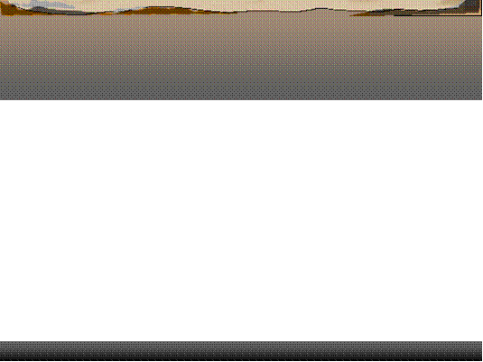

October 2, 2002
EDUCAUSE 2002
2
/17
Inspiration
Ü
No one has enough time
Ü
“What will happen when everyone has a web server?”
Ü
Focus is on pedagogy far more than technology
Ü
We learn from differences